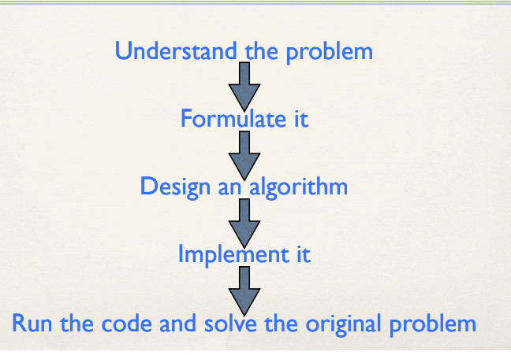
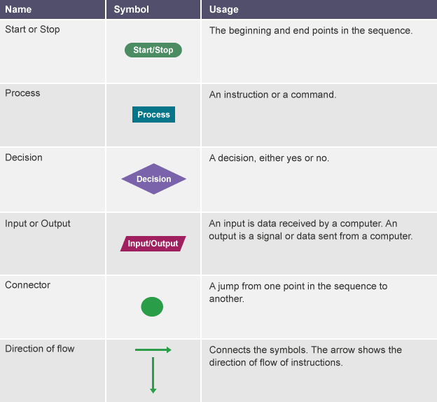
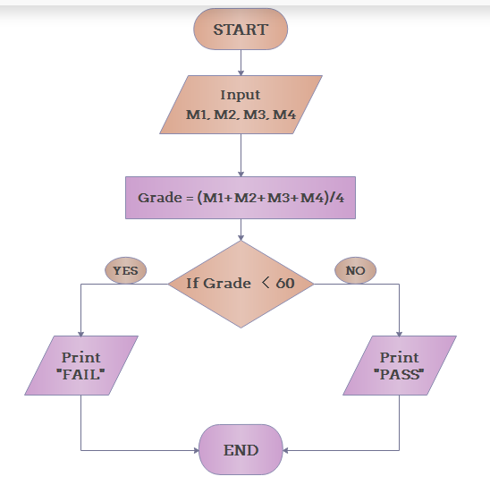

Algorithmic Thinking¶
What is Algorithms?¶
An algorithm is a sequence combination of finite steps to solve a particular problem.
“Algorithmic thinking is likely to cause the most disruptive paradigm shift in the sciences since quantum mechanics.”
—Bernard Chazelle
For example: Multiple two numbers
Step-1: Take two inputs(a,b)
Step-2: Multiply
aandband store insumStep-3: Print
sum
Importance of algorithms¶
To improve the efficiency of a computer program
Proper utilization of resources
Algorithmic Thinking: The Ultimate Steps¶

Step-1: Understabd the problem
Step-2: Formulate it
Step-3: Design an algorithm
Step-4: Implement it
Step-5: Run the code and solve the original problem
Understanding the Problem¶
Understabd the description of the problem
What are the input/output?
Do a few examples by hand
Think about special cases
Formulate the Problem¶
Think about the data and the best way to represent them(graph, strings, etc)
What mathematical criterion corresponds to the desired output?
Design an Algorithm¶
Is the formulated problem amenable to certain algorithm design technique (greedy, divide-and-conquer etc.)
What data structures match
Examples¶
\begin{example} Write a Python Program to Add Two Integers \end{example}
Start
Inputs A, B(INT)
SUM = A + B
PRINT SUM
End
A = int(input())
B = int(input())
SUM = A+B
print(SUM)
10
36
46
\begin{example}
Write a Python Program to Compute the Average of Two Integers
\end{example}
Start
INPUT A, B(INT)
AVG = A+B/2
PRINT AVG
End
X = int(input())
Y = int(input())
AVG = (X+Y)/2
print(AVG)
10
36
23.0
What is Flow Chart?¶
A flowchart is a type of diagram that represents a workflow or process. A flowchart can also be defined as a diagrammatic representation of an algorithm, a step-by-step approach to solving a task. The flowchart shows the steps as boxes of various kinds, and their order by connecting the boxes with arrows. Sources: wikipedia

Decision Making¶
Step-1: Start
Step-2: Input Marks
Step-3: Calculate Grade and Store in a Variable(Grade = M1+M2+M3+M4)
Step-4: Grade < 60?
Step-4.1: Yes, then print
FAILStep-4.2: False, then print
PASS
Step-5: End

What is Pseudocode?¶
Pseudocode is an informal high-level description of the operating principle of a computer program or other algorithm. It uses the structural conventions of a normal programming language, but is intended for human reading rather than machine reading.
Source: wikipedia
Pseudocode Example¶
Input M1
Input M2
Input M3
Input M4
Grade = (M1+M2+M3+M4)/4
if grade < 60
Print FAIL
else
Print Pass